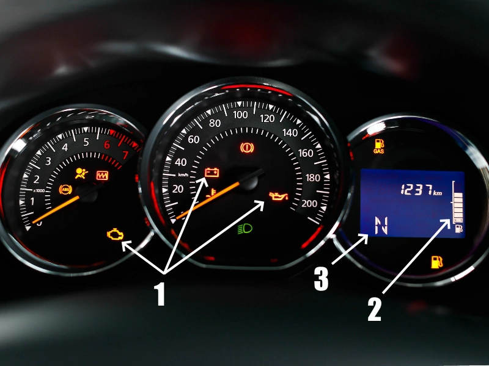
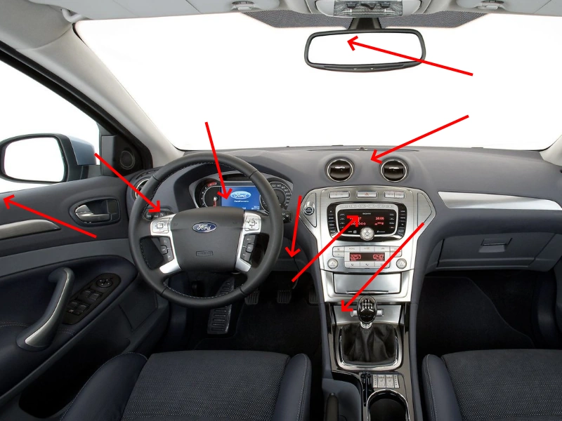
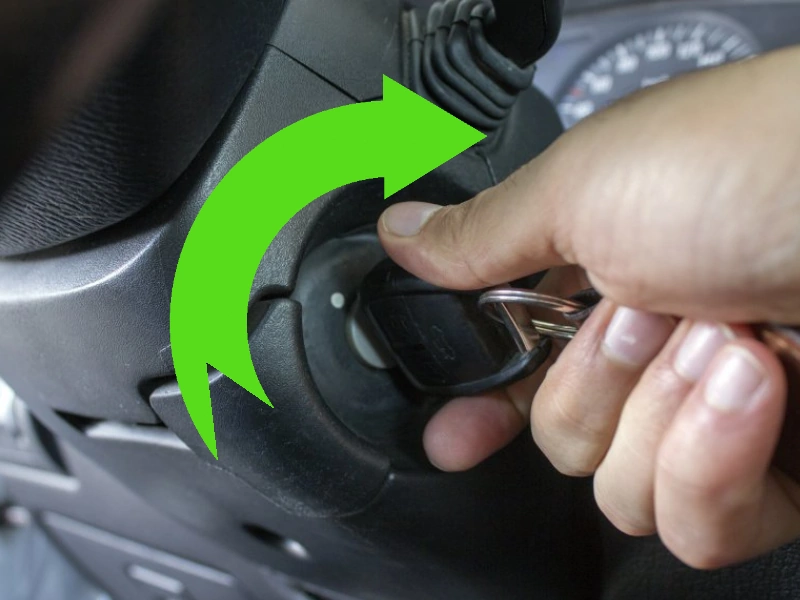
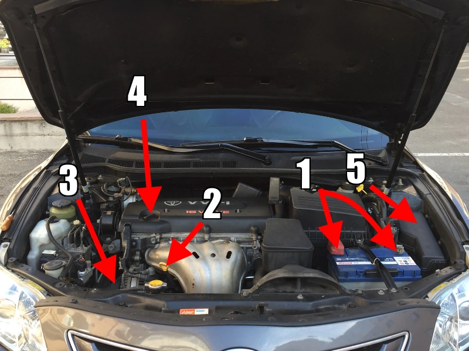
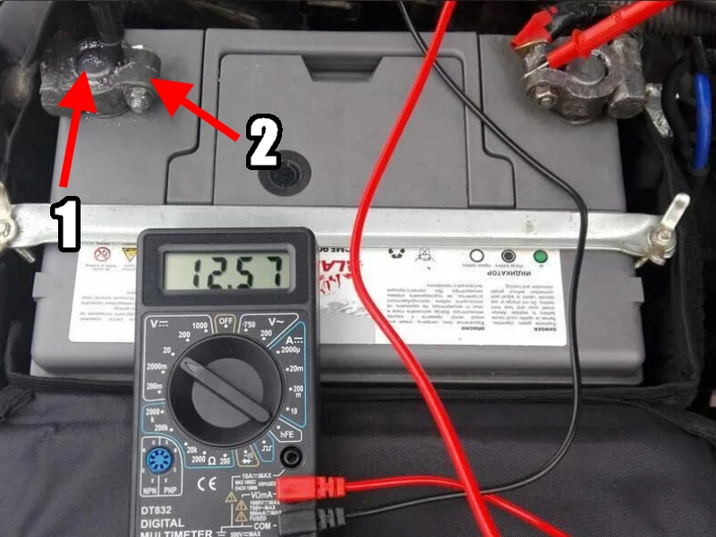

Ниже по тексту будут способы решения проблемы незапуска двигателя автомобиля, с чего начать и куда смотреть при различных проблемах.
1. Смотрим на панель приборов!

При запуске на коробке автомат пробуем поставить в нейтраль и запустить или двигать рычагом понемногу и пробовать запускать бывает что в некоторых положениях селектора стартер начинает вращать.
На панели внимательно смотрим на все что возможно температура зашкаливает на холодном авто или напряжение высокое (конечно если есть эти индикаторы) и пр. При вращении ключа в замке зажигания тоже можно попытатся поймать положение в котором стартер крутит, часто это чуть назад от крайнего.
Включаем зажигание! |
|---|
| 1. Эти значки должны гореть это значит есть питание на зажигании и "мозгах двигателя" и проверяем предохранители если не горят. |
| 2. Уровень топлива тоже смотрим, всякое бывает :) |
| 3. Проверяем нейтраль, пробуем выжать тормоз и сцепление если есть, так как на некоторых авто там стоит блокировка от запуска. |
2. Ищем иммобилайзер!

Обычно лампа иммобилайзера горит или мигает когда он заблокирован, и тухнет когда определился ключ и иимобилайзер разблокироавн. Если есть возможность проверьте накачку антенны иммо.
Он должен потухнуть! |
|---|
| Смотрим на панель приборов ищем значки с ключиком, так же просто жирную точку или надпись на экранчике "Иммо заблокирован" или что то в таком роде. |
| Смотрим вокруг, куда его только не засовывают и в водительскую дверь и около замка зажигания и в зеркало и в механические часы на торпедо, погуглите если не найдете. |
| Осмотрите ключи зажигания на наличие отверстий в пластике возможно чип иммо выпал(осмотрите коврик в салоне бывает повезет найти), также есть иммо работающие от батарейки поменяйте ее, при манипуляциях с ключами не потеряйте чип. |
3. Слушаем авто!
Звуки могут много рассказать |
|---|
| В первую очередь звук бензонасоса из бака при включении зажигания, и при вращении стартером, можно попробовать слушать через заливную горловину бака или под задним сидением. |
| Так же звуки могут быть от нештатных сигналок при включении зажигания, отмечаем что где щелкает |
| Слушаем стартер как включается, нет ли таррахтения(севший акб) и слишком быстрого вращения (грм порвался), тишина при включении расскажет об сломанном стартере, блокировках, а четкий щелчок о заклинившем стартере или двигателе. |
4. Не крутит стартер!

При включении стартера слушаем звуки его работы треск значит севший акб или сгоревшая вторая обмотка втягивающего; один мощьный щелчок - заклинивший стартер или двигатель; слишком легкое вращение без нагрузки - неисправный бендикс или срезанные зубья на маховике; тугое вращение стартера - посаженный акб, плохой контакт в силовых проводах, износ втулок стартера; тишина при включении - щеточный узел, проводка, реле, блокировки. Так же могут быть и другие проблемы.
Включаем стартер! |
|---|
| Смотрим включен ли паркинг или нейтраль, жмем тормоз и сцепление если есть там возможно блокировка стартера. |
| Шевелим замок зажигания и пытаемся найти точку где стартер срабатывает, так же шевелим селектор коробки и ставим на нейтраль из парковки для пробы. |
| Смотрим на панель и различные лампочки освещения в салоне если они притухают при включении стартера то значит он получает сигнал на включение и тратит ток. |
5. Открываем капот!

Так же общий осмотр проводим нюхаем нет ли чего горелого, нет ли разлитых жидкостей , не кипел ли аккумулятор (бывает мокрый или в белом налете) от перезаряда акб выходят из строя, осматриваем другие жидкости в бачках, не удивлюсь если нет тормозной или охлаждающей жидкости и машина заблокировалась(умные сейчас они), нет ли болтающихся шланго и проводов, пошевелите все руками особенно доп оборудование (газ, дуделки и пр. могут подкорачивать).
Внимательно осматриваем. |
|---|
| 1. Проверяем клеммы аккумулятора: в хорошем ли состоянии, не окислены ли они, крепко ли держатся, пробуем пошевелить, снять осмотреть внутри. |
| 2. Проверяем уровень масла: без масла двигатель может заклинить и стартер его не провернет, так же без масла не будет достаточной компресии и запуск будет сложным, также смотрим чтоб масло было маслом, а не майонезом так бывает когда попадает антифриз или вода, а так же не пахнуть бензином(соляркой). |
| 3. Проверяем ремень потянув на себя, это не грм но проверить стоит, ведь если слабая натяжка или обрыв то не будет идти заряд аккумулятора и машина может заглохнуть в дороге или не запустится если удалось дотянуть до дома, так же ремень может вращать помпу которая охлаждает двигатель, а перегревы очень опасны(пробивает прокладку блока и пр.). |
| 4. Если двигатель подозрительно легко вращается стартером и не запускается то можно открутить маслозаливную пробку и с помощью фонарика разглядеть при включенном стартере крутятся ли распредвалы или работают ли клапана(обычно видно хоть чтото) если там без движений то возможно обрыв ремня грм или срезаны несколько зубьев. |
| 5. Проверяем предохранители, те предохранители которые стоят на эбу или зажигание лучше заменить так как в них могут быть незаметные повреждения, так же осматриваем ножки предохранителя если они черные то возможно блок предохранителей подгорел. |
6. Меряем напряжение на АКБ!

Очень часто те места где протекают большие токи страдают от окислений и прочего, внимательно осматривайте силовые провода точки крепления возможно ржавчина, окисления, позеленения, при прокрутке стартером не должно ничего грется где
греется там плохой контакт, иногда даже большая деталь к которой прикручен силовой провод может не проводить ток(проверяйте напряжение на моторе в разных местах), перекрутите силовой минусовой провод если есть подозрения что он плохо проводит(особенно если прикручен на термостат или тонкую пластину), подергайте провода иногда несмотря на их толщину они рвутся легко так как прогнили внутри или развальцевались в клеммах, особенно минус на мотор от вибрации мотора страдает.
Почистите места под щупы |
|---|
| 1. Меряем напряжение непосредственно на свинцовых штырях торчащих из акб, на исправном и заряженном аккумуляторе должно быть 12.5 вольта примерно, при вклюсении стартера напряжение не должно проседать ниже 9 вольт иначе аккумулятор можно считать негодным. |
| 2. Меряем напряжение так же на клеммах акб оно не должно отличатся от напряжения на свинцовых штырях особенно при прокрутке стартером, если отличается то чистим, а при необходимости заменяем клеммы. Иногда налет внутри клеммы не заметен и лучше попробовать её почистить, на этой процедуре попадаются даже опытные автоэлектрики так что не поленитесь и все проверте. |
| Также проверте напряжение между плюсом акб и корпусом двигателя особенно при прокрутке стартером бывает что напряжение теряется по пути несмотря на толстые провода и близкое расстояние напряжение не должно отличатся больше сем на пол вольта. |
| Еще проверте напряжение между плюсом акб и кузовом автомобиля также без нагрузки стартера и с нагрузкой, напряжение не должно различатся больше чем на пол вольта чем просто на АКБ. |